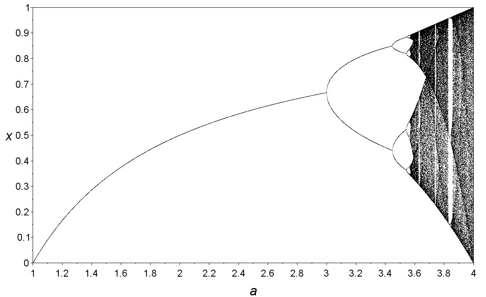
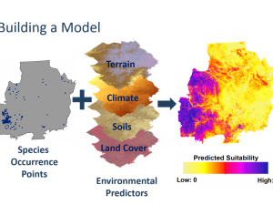

Modules
Computing in R
Introduction to programming
In this module, we will focus on programming fundamentals, with applications to biological data. We will also introduce libraries likeplyr and dplyr to go over how the tidyverse gang opts to do data manipulation.
Host-virus associations
VIRION
In this module, we will learn how to manipulate and visualize data, using the largest host-virus association database as a learning tool.Ecological Simulation

memory Simulated data
In this module, we will discuss how to simulate biological dynamics to test theory. In doing so, we will go over working with structured data (e.g., lists) and parallelization.Species distribution modeling

From Schell et al. 2020, https://doi.org/10.1126/science.aay4497